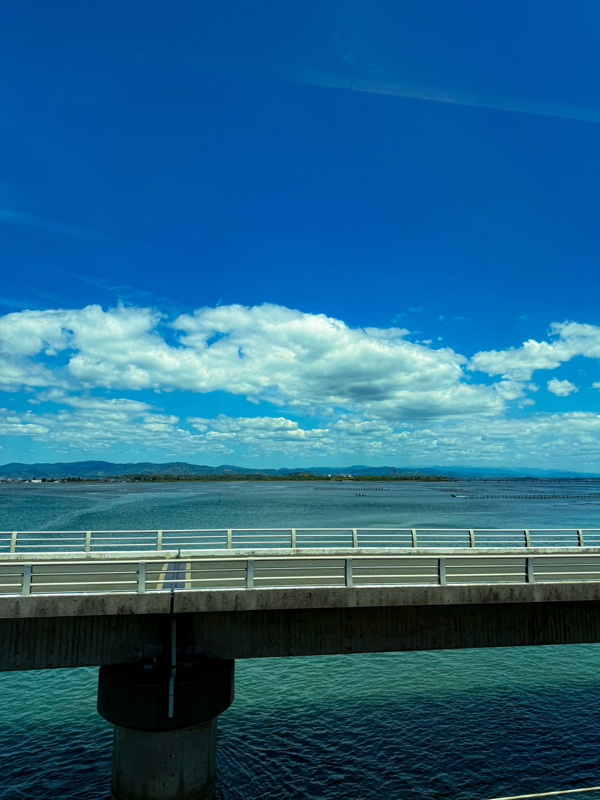

TOKAIDO SHINKANSEN WINDOW VIEW
浜名湖は新幹線から見える？
列車が、湖の上をはしる。

- 見える区間
- 浜松 → 豊橋
- 座席側
- A席・海側 / E席・山側
- タイミング
- 東京発のぞみ基準で約73分後
- 写真
- 9枚
浜名湖の見つけ方
浜松を出てしばらくすると、車窓の両側に浜名湖の水面がひろがります。E席側だけでなく、A席側にも水辺や橋が見える区間です。晴れた日の光の反射は、この路線でいちばん「旅をしている」と感じる瞬間のひとつ。うなぎの養殖いかだも探してみてください。
東京から新大阪方面へ向かう場合は、浜松 → 豊橋が近づいたらA席・海側 / E席・山側の窓を少し早めに見てください。新大阪から東京方面へ向かう場合は、通過順が逆になります。
東海道新幹線の車窓としてのポイント
浜名湖は、富士山だけではない東海道新幹線の車窓を楽しむための見どころです。列車の速度が速いため、見える時間は短く、天気や座席位置によって見え方が変わります。
参考リンク
English: Lake Hamana is a Tokaido Shinkansen window view around Hamamatsu → Toyohashi. After Hamamatsu, Lake Hamana spreads out on both sides of the train. It is not only a Seat E view; Seat A also gets water, bridges, and open sky. On a sunny day, the light off the water is one of the most journey-like moments on the line. Look for the eel-farming rafts.